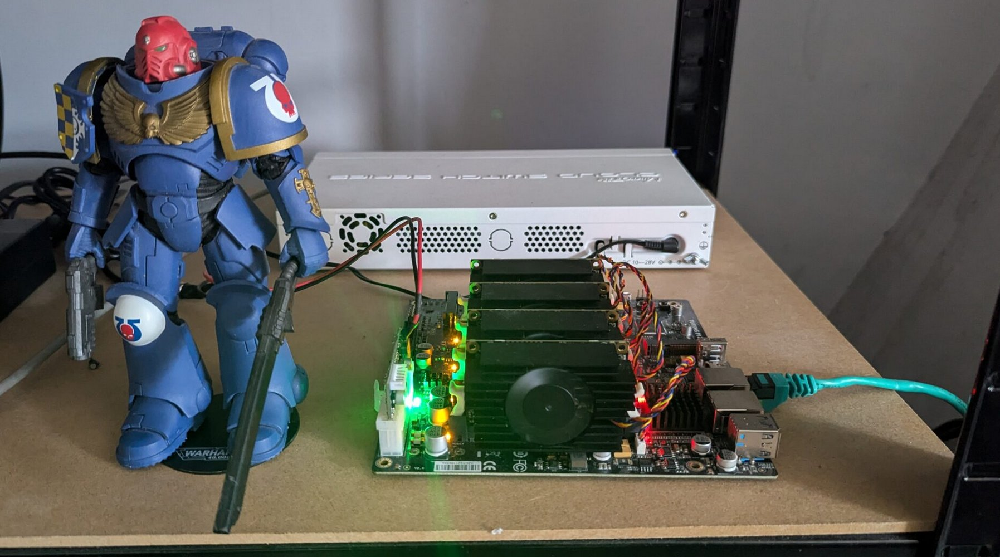
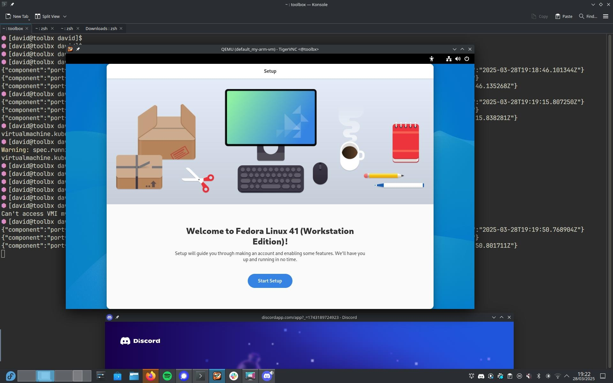

KubeVirt on ARM64 - CDI Workaround
According to the KubeVirt documentation, CDI is not currently supported on ARM64, which is the architecture my Turing RK1 nodes use.

As a workaround, I experimented with writing an image directly to a PVC which can then be cloned/mounted to a KubeVirt VM. This example dd's an ISO image to a PVC:
apiVersion: v1
kind: PersistentVolumeClaim
metadata:
name: fedora-workstation-pvc
spec:
accessModes:
- ReadWriteOnce
resources:
requests:
storage: 30Gi
volumeMode: Block
---
apiVersion: batch/v1
kind: Job
metadata:
name: upload-fedora-workstation-job
spec:
template:
spec:
containers:
- name: writer
image: fedora:latest
command: ["/bin/bash", "-c"]
args:
- |
set -e
echo "[1/3] Installing tools..."
dnf install -y curl xz
echo "[2/3] Downloading and decompressing Fedora Workstation image..."
curl -L https://download.fedoraproject.org/pub/fedora/linux/releases/41/Workstation/aarch64/images/Fedora-Workstation-41-1.4.aarch64.raw.xz | xz -d > /tmp/disk.raw
echo "[3/3] Writing image to PVC block device..."
dd if=/tmp/disk.raw of=/dev/vda bs=4M status=progress conv=fsync
echo "Done writing Fedora Workstation image to PVC!"
volumeDevices:
- name: disk
devicePath: /dev/vda
volumeMounts:
- name: tmp
mountPath: /tmp
securityContext:
runAsUser: 0
restartPolicy: Never
volumes:
- name: disk
persistentVolumeClaim:
claimName: fedora-workstation-pvc
- name: tmp
emptyDir: {}
Which can then be mounted to a VM:
apiVersion: kubevirt.io/v1
kind: VirtualMachine
metadata:
name: my-arm-vm
spec:
running: true
template:
metadata:
labels:
kubevirt.io/domain: my-arm-vm
spec:
domain:
cpu:
cores: 2
resources:
requests:
memory: 2Gi
devices:
disks:
- name: disk0
disk:
bus: virtio
volumes:
- name: disk0
persistentVolumeClaim:
claimName: fedora-workstation-pvc
